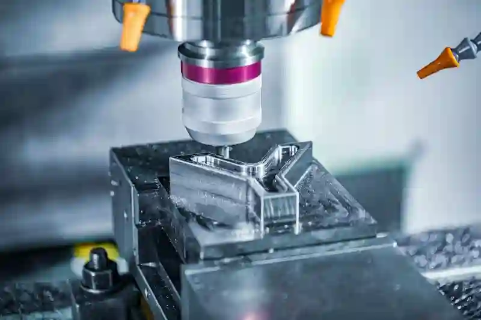
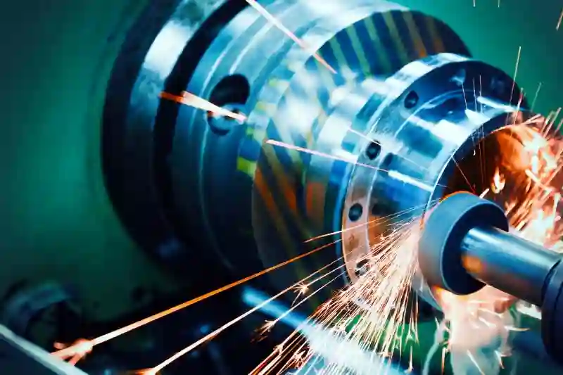
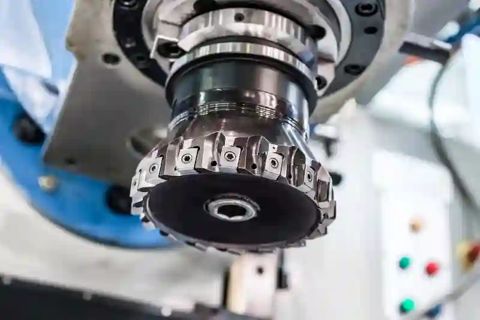

Otomotiv ve Elektrikli Araç CNC İmalatıOtomotiv ve Elektrikli Araç Sektörleri İçin Hassas CNC İmalat Çözümleri
Otomotiv ve elektrikli araç endüstrileri, yüksek hassasiyet, sürdürülebilir üretim, ileri mühendislik ve seri imalat güvenilirliği gerektiren iki stratejik sektördür. Aymaksan Makine olarak bu alanlara özel geliştirdiğimiz üretim altyapısı; CNC tornalama, CNC frezeleme, dik işleme, prototipleme, kaynak-montaj ve kalite kontrol süreçleriyle entegre çalışan kapsamlı bir imalat ekosistemi sunar. Bu kapasite, özellikle otomotiv ve elektrikli araç cnc imalatı alanında güvenilir, tekrarlanabilir ve uluslararası standartlara uygun çözümler üretmemizi sağlar.
Makine parkımızda yer alan DAHLIH MCV-1450, Doosan PUMA 280L, SB-20R Tip G, TOS SUI 50, TIG ve gazaltı kaynak sistemleri; otomotiv bileşenlerinden elektrikli araç batarya modüllerine kadar geniş bir ürün gamında verimli üretim yapılabilmesine olanak tanır. Bu sayede hem düşük adetli prototip geliştirme hem de yüksek hacimli seri üretim süreçleri aynı çatı altında optimize edilir. Bu sayfada, Aymaksan Makine’nin otomotiv ve elektrikli araç sektörlerine sunduğu çözümleri, üretim kabiliyetlerini ve süreç optimizasyon yöntemlerini ayrıntılı şekilde bulacaksınız.
Otomotiv Sektörü İçin CNC İşleme ve Hassas Parça Üretim Yaklaşımımız
Otomotiv üretimi, fonksiyonel dayanımın yanı sıra hassas tolerans anlayışına dayalı bir kalite kültürü gerektirir. Bu nedenle tüm üretim süreçlerimiz, ölçüsel doğruluğu artıran, yüzey kalitesini iyileştiren ve seri üretimde sapmayı minimize eden bir metodolojiyle yönetilir. Modern tezgâh parkımız, özellikle otomotiv cnc işleme çözümleri gereksinimleri için optimize edilmiştir.
Motor bileşenleri, gövde destek parçaları, bağlantı elemanları, şanzıman bileşenleri, kontrol mekanizmaları ve metal muhafaza parçalarında yüksek hassasiyet sunarken, karmaşık geometrilerde tekrarlanabilirliği koruyacak otomasyon yapıları kullanırız. Aymaksan Makine, konvansiyonel işleme ile sınırlı kalmayan; ısıyla şekillendirilmiş, dövme veya dökümden gelen parçaların bitmiş işleme operasyonlarında da güçlü bir çözüm ortağıdır.



Elektrikli Araç Komponentleri İçin Gelişmiş CNC Üretim ve Prototipleme
Elektrikli araç teknolojilerinin gelişimi, batarya modülleri, güç aktarım parçaları, inverter-braket sistemleri ve ısı yönetim elemanları gibi yeni nesil parça türlerini ortaya çıkarmıştır. Aymaksan Makine olarak bu özel gereksinimleri destekleyen üretim yapılarımız, elektrikli araç parçaları üretimi süreçlerinde yüksek düzeyde mühendislik doğruluğu sağlar.
Özellikle ev batarya modül parçaları cnc işleme ve elektrikli araç güç aktarım sistemi parça üretimi konularında sahip olduğumuz modern tezgâh parkı; optimum talaş kaldırma performansı, stabil yüzey kalitesi ve dar tolerans uygulamalarıyla sektörel beklentilerin üzerine çıkar. Ayrıca prototip aşamasından seri üretime geçişte teknik değişkenleri hızlı analiz eden mühendislik yaklaşımımız, Ar-Ge ekiplerine önemli bir hız avantajı kazandırır.
Aymaksan Makine, otomotiv ve elektrikli araç üretiminde hassas cnc işleme standartları ile güvenilir bir tedarikçi olarak konumlanır.
Otomotiv ve Elektrikli Araç Üretiminde Prototip, Ar-Ge ve Test Süreçlerine Entegre Çözümler
Yeni model geliştirme dönemlerinde, doğrulama testlerine uygun parça üretimi kritik bir aşamadır. Aymaksan Makine, bu süreçleri hızlandırmak için otomotiv prototip parça imalatı, elektrikli araç komponent cnc frezeleme hizmeti ve otomotiv ar-ge prototipleme imalatı gibi özel üretim hizmetleri sunar.
Ar-Ge departmanlarının teknik taleplerine göre hızlı revizyon yapılabilen esnek üretim kabiliyetimiz, hatalı numune döngülerini azaltarak ürün doğrulama süresini kısaltır. Bir prototipin 3 farklı varyasyonunun aynı gün içinde üretilebilmesi gibi avantajlar, sektörde önemli bir rekabet unsuru yaratır.
Savunma sanayinde her projenin kendine özgü gereksinimleri vardır. Bu sebeple savunma projeleri için özel parça imalatı, Aymaksan’ın proje yönetimi, dokümantasyon kontrolü ve izlenebilirlik yetenekleri ile bütünleşik şekilde yürütülür.
Alt yüklenici ihtiyaçlarını karşılayan kapsamlı üretim modelimiz sayesinde, yüksek hassasiyet gerektiren mekanik parçalar uygun tolerans aralıkları içinde üretilir ve kalite kontrol raporlarıyla teslim edilir. Ayrıca içerikte yalnızca bir kez geçmesi gereken Google Ads anahtar kelimesi olan askeri parçalar cnc işleme terimi burada kullanılmıştır.
Projeni Başlat
Makine Parkımızın Otomotiv ve Elektrikli Araç Üretimine Sağladığı Avantajlar
Aymaksan Makine’nin üretim gücü, sektörel gereksinimleri doğrudan karşılayacak şekilde kurgulanmış ileri düzey bir makine parkına dayanır. Bu parkın her bir tezgâhı, otomotiv ve elektrikli araç projelerinde sıkça karşılaşılan dar tolerans, yüksek yüzey kalitesi, karmaşık geometri ve seri üretim stabilitesi gibi gerekliliklere yanıt verir. Özellikle otomotiv hassas toleranslı talaşlı imalat süreçlerinde hassasiyeti garanti altına alan bu yapılar, proje bazlı üretimlerde tutarlılığı sağlamanın temel anahtarıdır.
Aşağıdaki alt başlıklarda, makine parkımızın her bir elemanının sektörel kullanım alanlarını ayrıntılı şekilde değerlendireceğiz.
DAHLIH MCV-1450 ile EV Batarya Kasası, Braket ve Gövde Parçalarında Üstün Performans
DAHLIH MCV-1450 Dik İşleme Merkezi, elektrikli araçların batarya modülleri ve taşıyıcı sistemleri için ideal bir tezgâhtır. Yüksek rijitlik, geniş tabla kapasitesi ve yüksek hassasiyet kombinasyonu, batarya kasası metal işleme çözümleri için kritik olan boyutsal kararlılığı sağlar.
Geniş işleme hacmi sayesinde:
- EV batarya modül kasaları
- Motor kontrol ünitesi braketleri
- Isı yönetim sistemi plakaları
- Gövde bağlantı plakaları
gibi parçalar tek bağlama ile yüksek doğrulukta işlenebilir. Bu, hem maliyetleri düşürür hem de süreç verimliliğini artırır.
Doosan / DN Solutions PUMA 280L ile Otomotiv Serbest ve Döner Parçalarında Yüksek Tutarlılık
PUMA 280L, özellikle otomotiv seri üretim cnc tedarikçisi kapsamında en çok tercih edilen tezgâhlarımızdan biridir. Güçlü iş mili, yüksek talaş kaldırma performansı ve uzun parçalar için mükemmel stabilite sunan yapısıyla otomotiv motor parçaları için idealdir.
Bu tezgâh ile:
- Sensör muhafazaları
- Şaft bileşenleri
- Serbest döner parçalar
- Bağlantı elemanları
seri üretimde tekrarlanabilirlik sağlayacak şekilde imal edilebilir.
Ayrıca tezgâhın yüksek kararlılığı, otomotiv cnc işleme çözümleri sunarken yüzey pürüzlülüğü gereksinimlerini optimum seviyeye taşır.
SB-20R Tip G ve Küçük Çaplı EV / Otomotiv Komponentlerinde Üstün Hassasiyet
İsviçre tipi kayar otomat mantığıyla çalışan SB-20R Tip G, düşük çaplı parçaların yüksek hız ve hassasiyette üretilmesini sağlar. Bu özellik, özellikle:
- elektrikli araç sensör yuvaları
- bağlantı pinleri
- mikro mekanik bileşenler
- yüksek hassasiyet gerektiren küçük çap otomotiv elemanları
üretiminde kritik avantaj yaratır.
Bu tip komponentler özellikle elektrikli araç güç aktarım sistemi parça üretimi projelerinde yoğun olarak kullanılır. Yüksek devir kararlılığı ve minimum sapma, seri üretimde kalite kaybını tamamen ortadan kaldırır.
TOS SUI 50 Universal Torna ile Uzun Parçaların Otomotiv İşleme Kapasitesi
TOS SUI 50, uzun mil, şaft ve silindirik bileşenlerin işlenmesinde yüksek performans sağlar. Uzun merkez mesafesi ve geniş salınım kapasitesi, otomotiv sektöründe sıkça kullanılan:
- tahrik mili bileşenleri
- aktarma organı parçaları
- silindirik gövde elemanları
gibi parçaların sorunsuz üretimini mümkün kılar.
Özellikle otomotiv prototip parça imalatı aşamasında uzun elemanların işlenmesinde rekabet avantajı sağlar.
TIG ve Gazaltı Kaynak Sistemleri ile Elektrikli Araç Yapısal Parça Üretimi
Kaynak ve montaj süreçleri, özellikle elektrikli araç batarya modülleri, şasi parçaları ve taşıyıcı metal bileşenler için kritik öneme sahiptir. TIG ve MIG/MAG sistemlerimiz:
- ince malzemelerde çarpılma riskini azaltır
- yüksek akım stabilitesiyle dayanım sağlar
- otomotiv ve EV montaj parçalarında tekrarlanabilirliği artırır
Bu üretim karakteri, elektrikli araç parçaları üretimi projelerinde yoğun olarak talep gören braket ve taşıyıcı sistemlerin doğrulukla üretilmesini sağlar.
Otomotiv ve Elektrikli Araç Parçalarında Kullanılan Malzemeler ve İşleme Teknikleri
Her sektörün kendine özgü malzeme karakteristikleri bulunur. Otomotivde dayanım ve ısı direnci belirleyici iken, elektrikli araçlarda ağırlık azaltma ve ısı iletkenliği daha ön plandadır.
Aşağıda malzeme bazlı işleme kriterlerini özetliyoruz.
Alüminyum Parçalarda Yüksek Hızlı İşleme Yeteneği
Elektrikli araçlarda alüminyumun yaygınlaşması, işleme süreçlerinin hassas kontrolünü gerektirir. Özellikle:
- Al 6061
- Al 7075
- Al 6082
gibi alaşımlar batarya, gövde ve bağlantı elemanlarında sıklıkla kullanılır.
DAHLIH MCV-1450 ve PUMA 280L’nin yüksek iş mili performansı, bu malzemelerde elektrikli araç komponent cnc frezeleme hizmeti için kusursuz bir altyapı sunar.
Çelik ve Paslanmaz Çelik Bileşenlerde Stabil Toleranslar
Otomotiv sektöründe:
- 42CrMo4
- 16MnCr5
- 304L
- 316L
gibi alaşımlar fonksiyonel dayanım için tercih edilir. Bu malzemelerde işleme toleranslarının korunması, otomotiv hassas toleranslı talaşlı imalat süreçlerinin temel gerekliliklerinden biridir.
Bu nedenle işleme planlarımız, titreşim azaltıcı bağlama yöntemleri ve süreç optimizasyonlarıyla desteklenir.
Pirinç, Bronz ve Özel Alaşımlarda Mikro Hassasiyet
SB-20R Tip G, sensör sistemleri ve iletken bileşenlerde kullanılan pirinç ve bronz parçaların mikro toleranslarda işlenmesini mümkün kılar. Bu malzeme grubunda:
- sensör yuvaları
- pin bağlantıları
- elektriksel temas parçaları
yüksek hassasiyet gerektiren alanlardır.
Elektrikli Araçlarda Batarya Modülü, Güç Aktarım ve Isı Yönetim Parçaları Üretimi
Elektrikli araç platformlarında en kritik üç alan:
- Batarya sistemi
- Güç aktarım mekanizması
- Isı yönetim birimleri
Bu üç alan, üretimde hassasiyetin en çok gerekli olduğu bileşenlerdir.
Batarya Modülü Parçaları
EV batarya paketlerinde kullanılan:
- terminal blokları
- soğutma plakaları
- modül kasaları
- bağlantı braketleri
Aymaksan Makine’nin elektrikli araç parçaları üretimi tecrübesinin en güçlü olduğu alanlardan biridir.
Bu parçaların üretiminde mutlaka:
- dar tolerans kontrolü
- yüzey pürüzlülüğü optimizasyonu
- ısı transfer tasarım kriterleri
göz önünde bulundurulur.
Güç Aktarım Sistemi Parçaları
Elektrikli araçlarda güç aktarım sistemleri, geleneksel içten yanmalı motorlara göre daha kompakt ve daha yüksek hassasiyet gerektirir.
Aymaksan bu alanda:
- mil ve şaft bileşenleri
- bağlantı yuvaları
- muhafaza parçaları
üretiminde tecrübeye sahiptir.
Bu süreçler, özellikle elektrikli araç güç aktarım sistemi parça üretimi projelerinde kritik rol oynar.
Isı Yönetim Parçaları
Elektrikli araçların güvenliği, ısı kontrolüyle doğrudan ilişkilidir. Bu nedenle:
- soğutucu plakalar
- ısı transfer blokları
- batarya stabilizasyon parçaları
yüksek hassasiyet gerektirir.
Bu bileşenler için ev batarya modül parçaları cnc işleme süreçlerimiz Ar-Ge ekiplerine optimum çözüm sunar.
Projeni Başlat
Ölçüm, Kalite Kontrol ve Üretim Doğrulama Süreçlerindeki Yetkinliklerimiz
Otomotiv ve elektrikli araç sektörleri, güvenlik ve fonksiyonellik açısından en katı kalite standartlarına sahip alanlardır. Aymaksan Makine, üretim sürecini yalnızca talaş kaldırma operasyonlarından ibaret görmez; kalite doğrulama, ölçümsel analiz ve süreç izlenebilirliği, üretim zincirinin ayrılmaz bir parçasıdır. Bu yaklaşım, özellikle otomotiv ve elektrikli araç cnc imalatı projelerinde tutarlılığı artırır ve müşteri gereksinimlerinin eksiksiz şekilde karşılanmasını sağlar.
Bu nedenle kalite kontrol süreçlerimiz; CMM ölçüm cihazları, yüzey pürüzlülüğü test sistemleri, sertlik kontrol çözümleri ve proses içi ölçüm teknikleriyle desteklenmektedir.
CMM Ölçüm Teknolojileri ile Yüksek Hassasiyet Doğrulama
Koordinat Ölçüm Makinesi (CMM), otomotiv ve EV bileşenlerinin ölçüsel doğruluğunu garanti altına alan en kritik ekipmandır. Özellikle:
- motor bağlantı parçaları
- batarya modül komponentleri
- şaft bileşenleri
- hassas gövde plakaları
gibi parçalarda mikro seviyede doğrulama gereklidir.
Bu teknoloji sayesinde, otomotiv hassas toleranslı talaşlı imalat projelerinde tolerans kaçakları üretim başlamadan tespit edilir ve gerekli düzenlemeler hızla yapılır.
CMM ölçümleri aynı zamanda PPAP, FAI ve seri üretim onay süreçlerinin ayrılmaz bir parçasıdır.
Proses İçi Kontroller ve Seri Üretim Stabilitesi
Seri üretim projelerinde; ilk parça kontrolü, ara kontrol ve final kalite kontrol döngüleri zorunludur. Aymaksan Makine’de bu döngü:
- İşleme sırasında proses içi ölçüm
- Kritik boyutların her parti başında kontrolü
- Operatör onaylı ölçüm doğrulama
- Son ürün kalite raporlaması
şeklinde yönetilir.
Bu döngü, otomotiv cnc işleme çözümleri ile üretilen parçaların seri halde aynı kalite düzeyinde teslim edilmesini sağlar.
Malzeme Sertlik ve Yüzey Kalitesi Testleri
Elektrikli araç parçalarında yüzey pürüzlülüğü; ısı transferi, sürtünme katsayısı ve parça dayanımı açısından kritik rol oynar. Bu nedenle:
- yüzey pürüzlülüğü test cihazları
- taşlama sonrası yüzey optimizasyonu
- sertlik test prosedürleri
kullanılarak her parçanın kullanım senaryosuna uygunluğu doğrulanır.
Bu kontrol yöntemleri özellikle elektrikli araç parçaları üretimi projelerinde sıklıkla uygulanır.
Prototipten Seri Üretime Geçiş Süreçlerindeki Yaklaşımımız
Yeni geliştirilen bir otomotiv veya elektrikli araç bileşeninin seri üretime uygun hale gelmesi için güçlü bir mühendislik altyapısı gerekir. Aymaksan Makine, prototip aşamasından seri üretim fazına geçişte kritik mühendislik kararlarını optimize ederek maliyet, üretim hızı ve doğruluk arasında en doğru dengeyi kurar.
Özellikle aşağıdaki alanlarda uzmanlık sahibiyiz:
- geometrik optimizasyon
- takım yolu stratejisi oluşturma
- bağlama fikstürü tasarımı
- uygun tezgâh seçimi
- tolerans yapılandırması
Bu yaklaşım sayesinde, otomotiv ar-ge prototipleme imalatı projeleri seri üretime en düşük revizyon ihtiyacıyla geçer.
Prototip Parçalarda Revizyon Süreçlerinin Hızlandırılması
Prototip parça projelerinde tipik olarak birkaç revizyon aşaması bulunur. Aymaksan Makine’de revizyon yönetimi:
- önceki versiyon ile yeni versiyonun tolerans karşılaştırması
- 3D model bazlı hataların tespiti
- işleme sürelerinin optimize edilmesi
- parça geometrisinin üretilebilirliğinin analiz edilmesi
şeklinde yürütülür.
Bu hız kazandıran süreç, özellikle otomotiv prototip parça imalatı ve elektrikli araç komponent cnc frezeleme hizmeti taleplerinde büyük avantaj sağlar.
Seri Üretime Uygun Bağlama ve Takım Stratejileri
Seri üretimin verimli olabilmesi için uygun bağlama sistemlerinin tasarlanması zorunludur. Bu nedenle:
- tek bağlama ile çoklu yüzey işleme
- parçaya özel fikstür üretimi
- vibrasyon azaltıcı bağlama yöntemleri
- takım ömrünü uzatan kesme parametreleri
kullanılır.
Bu süreç, elektrikli araç güç aktarım sistemi parça üretimi gibi parçaların kararlı şekilde üretilmesini sağlar.
Tedarik Zinciri Yönetimi ve Parça İzlenebilirliği
Otomotiv sektöründe her parçanın üretim geçmişinin kaydedilmesi gerekir. Aymaksan Makine, bu süreci QR kodlu, parça bazlı ve parti bazlı üretim takip sistemleri ile yönetir.
Bu sayede:
- üretim partisi
- revizyon numarası
- işleme tarihi
- operatör
- ölçüm sonuçları
tek bir kayıt üzerinden izlenebilir.
Bu sistem, özellikle batarya modülleri ve şaft bileşenleri gibi güvenlik kritik parçaların kontrolünde büyük avantaj sağlar.
PPAP, FAI ve ISO Standartlarına Uyum
Otomotiv projelerinde zorunlu olan kalite dokümantasyonları arasında:
- PPAP (Production Part Approval Process)
- FAI (First Article Inspection)
- ISO 9001 ve ISO 14001 uyum süreçleri
bulunur.
Aymaksan Makine tüm bu süreçlere uygun üretim raporlaması sağlar. Bu da otomotiv ve elektrikli araç cnc imalatı alanında güvenilir bir tedarikçi olmamızın temel nedenlerinden biridir.
Projeni Başlat
Otomotiv ve Elektrikli Araç Sektöründe Proje Bazlı Üretim Senaryoları
Aymaksan Makine, her müşterinin ürün geliştirme döngüsüne uygun olarak projeleri farklı üretim aşamalarında konumlandırır. Otomotiv ve elektrikli araç sektörlerindeki iş akışları genellikle tasarım, prototip, test, revizyon, pilot üretim ve seri üretim fazlarından oluşur. Bu süreçlerin her birinde teknik ekiplerimiz, sektör gereksinimlerini merkeze alan bir metodoloji uygular.
Bu yapı, özellikle otomotiv ve elektrikli araç cnc imalatı projelerinde üretim akışının kesintisiz ilerlemesini sağlar.
Tasarım ve Üretilebilirlik Analizi (DFM)
Otomotiv ve elektrikli araç parçalarında üretilebilirlik analizi, üretim maliyetlerini ve revizyon gereksinimini önemli ölçüde azaltır. Bu nedenle projelerin ilk aşamalarında:
- malzeme seçimi
- tolerans yapısı
- kalınlık ve geometrik stabilite
- optimum takım yolu stratejisi
detaylı şekilde analiz edilir.
Aymaksan Makine’nin mühendis ekibi, bu aşamada otomotiv ar-ge prototipleme imalatı gereksinimlerini doğru şekilde karşılamak için bilgisayar destekli analiz yöntemleri uygular.
Prototip Üretim Aşaması
Prototip üretimi, tasarım doğrulamanın temelidir. Bu aşamada:
- tekli numune üretimi
- konsept parça işleme
- malzeme alternatifi testleri
- tolerans doğrulama çalışmaları
gerçekleştirilir. Prototipin hızlı üretilmesi, özellikle elektrikli araç sektöründe pazara giriş süresini belirgin şekilde kısaltır.
Bu aşama sıklıkla elektrikli araç komponent cnc frezeleme hizmeti ve otomotiv prototip parça imalatı taleplerini içerir.
Pilot Üretim ve Test Döngüsü
Pilot üretim, prototipin olgunlaştığı ve seri üretime uygun hale getirildiği aşamadır. Bu süreçte:
- seri üretim parametreleri belirlenir
- bağlama fikstürleri doğrulanır
- proses içi tolerans sapmaları analiz edilir
- CMM ölçümlerinin tekrarlanabilirliği test edilir
Pilot üretim başarıyla tamamlandığında ürün, seri üretime geçmeye hazır hale gelir.
Bu aşama, özellikle otomotiv seri üretim cnc tedarikçisi arayan firmalar için en kritik doğrulama sürecidir.
Seri Üretim Aşaması
Seri üretim, tüm proses doğrulamalarının tamamlanmasıyla başlayan sürekli üretim fazıdır. Aymaksan Makine’de seri üretim:
- sabit proses parametreleri
- parti bazlı üretim planlaması
- ara kontrol sistemleri
- final kalite raporlaması
ile yönetilir.
Seri üretim alanında özellikle elektrikli araç güç aktarım sistemi parça üretimi ve ev batarya modül parçaları cnc işleme projelerinde yüksek kapasite sunmaktayız.
Montaj, Kaynak ve Bitmiş Ürün Teslimat Süreçleri
Aymaksan Makine, sadece işlenmiş bileşen teslim eden bir üretici değil; montaj ve kaynak operasyonlarıyla bitmiş ürün teslimatı da sağlayan bir çözüm ortağıdır.
Kaynak Montajlı Otomotiv Parçaları
Otomotiv ve EV platformlarında sıklıkla ihtiyaç duyulan:
- braket sistemleri
- şasi bağlantıları
- batarya taşıyıcı yapılar
- motor alt destek parçaları
TIG ve MIG/MAG kaynak yöntemleriyle yüksek dayanımda üretilir.
Bu parçalar özellikle elektrikli araç parçaları üretimi projelerinde fonksiyonel dayanım açısından kritik önem taşır.
Vidali ve Pres Montaj Çözümleri
İşlenmiş parçaların diğer bileşenlerle birleştirilmesi gerektiğinde:
- pres geçme
- vidalı montaj
- perçinleme
- pnömatik montaj çözümleri
kullanılır.
Bu montaj hizmetleri, prototip ve pilot üretim dönemlerinde önemli avantajlar sağlar.
Lojistik, Paketleme ve Teslimat Yönetimi
Otomotiv parçaları yüzey hatalarına karşı hassastır. Bu nedenle paketleme süreçlerimiz:
- özel köpük koruyucu sistemler
- karton ayrıştırıcı destekler
- parti bazlı etiketleme
- güvenli taşıma prosedürleri
ile yönetilir.
Siparişler, müşteri talebine göre:
- parti bazlı teslim
- JIT (Just in Time)
- proje bazlı sevkiyat
modelleriyle gönderilir.
Kullanım Senaryoları – Otomotiv ve Elektrikli Araç Parçalarında Örnek Uygulamalar
Aymaksan Makine’nin üretim kapasitesi, aşağıdaki kullanım senaryolarında maksimum verim sağlar.
Motor ve Şanzıman Bileşenleri
Bu bileşenlerde:
- yüksek hassasiyet
- termal dayanım
- yüzey kalitesi
kritik öneme sahiptir.
Bu kategori, otomotiv cnc işleme çözümleri için en çok talep gören alanlardan biridir.
Elektrikli Araç Batarya Taşıyıcı Sistemleri
Bu sistemlerde:
- alüminyum gövde yapıları
- modül kasaları
- bağlantı plakaları
yüksek mühendislik doğruluğu gerektirir.
Bu alan özellikle batarya kasası metal işleme çözümleri kapsamında öne çıkar.
Sensör Sistemleri ve Mikro Mekanik Parçalar
Bu parçalar:
- küçük çap
- dar tolerans
- yüksek hassasiyet
gerektirir.
SB-20R Tip G tezgâhımız, bu tür bileşenlerin üretiminde benzersiz bir avantaj sunar.
Bu alan elektrikli araç komponent cnc frezeleme hizmeti projelerinde yoğun talep görür.
Yapısal Destek Parçaları
Bu kategori, otomotiv ve elektrikli araçların montaj süreçlerinde kullanılan:
- braketler
- taşıyıcı çerçeveler
- bağlantı kolları
gibi bileşenleri kapsar.
Bu parçaların çoğu, TIG kaynak ve dik işleme süreçlerinin birleşimiyle üretilir.
Projeni Başlat
Otomotiv ve Elektrikli Araç Sektöründe Uzun Vadeli İş Ortaklığı Yaklaşımımız
Aymaksan Makine, üretim yaptığı sektörlerde yalnızca tedarikçi olarak değil, çözüme dayalı bir mühendislik partneri olarak konumlanmayı amaçlar. Bu yaklaşım, otomotiv ve elektrikli araç projelerinde ürün yaşam döngüsünün tüm safhalarında müşteriye teknik destek sağlanmasını mümkün kılar. Müşterilerimiz için sadece bir parça üretimi değil; tasarım sürecinden prototiplemeye, test optimizasyonundan seri üretim yönetimine ve kalite kontrol raporlamasına kadar bütünleşik bir süreç yürütürüz.
Bu yaklaşım, özellikle otomotiv ve elektrikli araç cnc imalatı alanında istikrarlı bir tedarik ağı oluşturmanıza katkı sağlar.
Teknik Danışmanlık ve Üretim Optimizasyonu
Sektörde yaşanan hızlı dönüşümler, mühendislik ekiplerinin üretim süreçlerinde destek ihtiyacını artırmıştır. Bu nedenle Aymaksan Makine, müşterilerinin teknik birimlerine:
- yeni projelerde üretilebilirlik analizi
- malzeme optimizasyonu
- tolerans yapılandırma önerileri
- prototipten seri üretime geçiş planlaması
gibi alanlarda danışmanlık sunar.
Bu danışmanlık süreci, otomotiv cnc işleme çözümleri ve elektrikli araç parçaları üretimi projelerinde zaman ve maliyet tasarrufu sağlar.
Süreç Şeffaflığı ve Müşteri Portalı Alt Yapısı
Otomotiv ve EV projelerinde tüm üretim döngüsünün izlenebilir olması, sektör gerekliliklerinin başında gelir. Aymaksan Makine, müşterilere özel oluşturulan çevrim içi proje takip paneli aracılığıyla:
- üretim aşamaları
- revizyon bildirimi
- ölçüm raporları
- sevkiyat belgeleri
- onay süreçleri
gibi tüm detayları anlık olarak paylaşır.
Bu altyapı, otomotiv hassas toleranslı talaşlı imalat süreçlerinde kritik öneme sahip izlenebilirliği sağlar.
Aymaksan Makine ile Geleceğe Hazır Üretim
Elektrikli araçlar, sürdürülebilirlik politikalarının merkezinde yer alırken; otomotiv sektöründe de dönüşümün hızı her geçen gün artmaktadır. Bu dönüşüm, üreticilerin sadece teknik kapasite değil; aynı zamanda esneklik, inovasyon ve kalite odaklı yaklaşım sunmasını zorunlu kılar.
Aymaksan Makine olarak, modern makine parkımız, deneyimli kadromuz ve sektörel uzmanlığımızla;
- otomotiv prototip parça imalatı,
- elektrikli araç güç aktarım sistemi parça üretimi,
- ev batarya modül parçaları cnc işleme,
- otomotiv ar-ge prototipleme imalatı
gibi tüm kritik alanlarda yüksek doğruluk, sürdürülebilir kalite ve ölçülebilir üretim performansı sağlamaktayız.
Üretim Güvencesi ve Kalite Standartlarımız
Üretim güvenilirliği aşağıdaki değerlere dayanır:
- ISO 9001 kalite yönetim altyapısı
- Ölçüm doğruluğu testleri
- Süreç içi kalite kontrol döngüleri
- Makine parkı kalibrasyonları
- Parti bazlı üretim raporlaması
Bu süreçler, otomotiv ve elektrikli araç sektörlerinin beklediği kalite standardını sürekli olarak korumamızı sağlar.
Sonuç – Aymaksan Makine ile Otomotiv ve Elektrikli Araç Projelerinde Üstün Üretim Kabiliyeti
Aymaksan Makine, otomotiv ve elektrikli araç sektörlerine özel geliştirdiği üretim altyapısıyla; hassas CNC işleme, prototipleme, kaynak-montaj, kalite kontrol ve mühendislik desteğini tek çatı altında sunan güçlü bir üretim ortağıdır.
Gelişmiş makine parkımız (DAHLIH MCV-1450, Doosan PUMA 280L, SB-20R Tip G, TOS SUI 50, TIG ve gazaltı kaynak sistemleri) ile en zorlu geometrilere sahip parçaları yüksek doğrulukla işleyebilmekteyiz.
Bu üretim kapasitesi;
- otomotiv ve elektrikli araç cnc imalatı,
- otomotiv cnc işleme çözümleri,
- elektrikli araç parçaları üretimi,
- otomotiv prototip parça imalatı,
- ev batarya modül parçaları cnc işleme,
- otomotiv hassas toleranslı talaşlı imalat,
- elektrikli araç güç aktarım sistemi parça üretimi
gibi alanlarda sürdürülebilir kapasite ve yüksek kalite sağlar.
Sayfa boyunca belirtilen teknik altyapı, kalite kontrol süreçleri ve mühendislik yaklaşımı, Aymaksan Makine’nin otomotiv ve elektrikli araç sektörlerinde güvenilir, hızlı ve çözüm odaklı bir tedarikçi olmasını sağlamaktadır.
Projeni Başlat
Şu linklerde yer alan sayfaları ve web sitelerini incelemenizi de tavsiye ederiz.
Dış Kaynaklar
- ISO – International Organization for Standardization | ISO Standartları
- SAE International | Advancing mobility knowledge and solutions | SAE Automotive Engineering – Otomotiv üretim standartları, Otomotiv mühendisliği genel standartları
- European Alternative Fuels Observatory | Elektrikli Araç Veri Platformu
- EUROBAT | Elektrikli araç güvenlik dokümanları
- ISO – ISO 9000 family — Quality management | ISO 9001 hakkında kaynak
- E-Mobility Europe | EV Batarya Sistemleri Bilgi Kaynağı
İç Kaynaklar – Makine Parkımız
- DAHLIH MCV-1450 Dik İşleme Merkezi
- Doosan / DN Solutions PUMA 280L CNC Torna
- TOS SUI 50 Universal Torna
- SB-20R Tip G Otomatik Torna
- PoWerPlus TIG 320 AC/DC Pulse
- VARIO STAR 304-G MIG MAG Kaynak Makinesi
İç Kaynaklar – Hizmetlerimiz